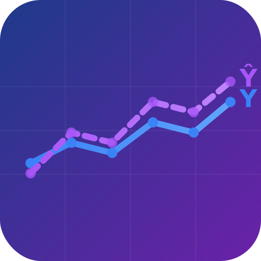

KitTrix Express Icons
Y/Ŷ Statistical Framework Icon System
Design Elements
Y (Production)
Solid blue line
Ŷ (Scenarios)
Dashed purple line
Background
Navy → Purple gradient
App Icon (High Resolution)

icon-source.svg
512×512 • Used for PWA, Apple Touch Icon
✓ Detailed dual timeline chart
✓ Y and Ŷ labels
✓ 6 data points per line
✓ Grid background
Favicon (Browser Tab)
favicon.svg
64×64 • Optimized for small sizes
✓ Simplified dual lines
✓ No text (too small)
✓ Indicator dots
✓ Clean & recognizable
Different Sizes Preview
SVG format scales perfectly to any size
Dark Mode Appearance
Icons work great on dark backgrounds
Usage
Browser Tab: favicon.svg automatically appears in browser tabs
Apple iOS: icon-source.svg used when "Add to Home Screen"
PWA Install: icon-source.svg shown during app installation
Bookmarks: favicon.svg appears in bookmark bars
Created November 16, 2025 • Y/Ŷ Statistical Framework Design System